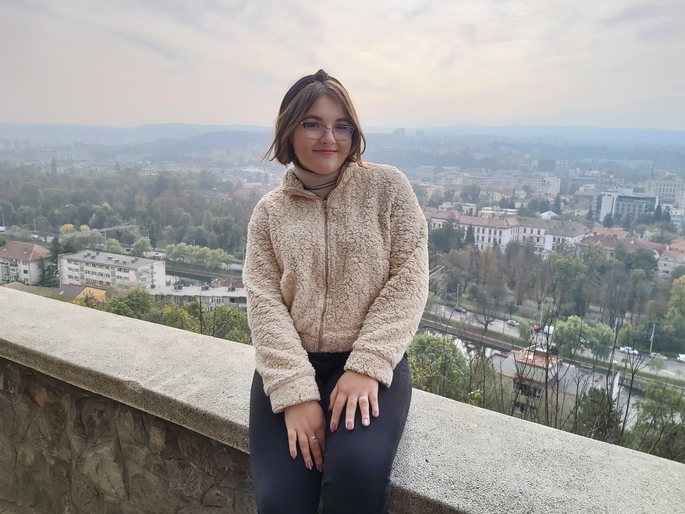

Zinveliu Ioana-Victoria
"Email: Ioana.Du.Zinveliu@utcluj.didatec.ro"
| UTC-N |
2020 |
student |
| CNGC |
2016-2020 |
bacalaureat |

“Daca nu iti cunosti limitele, defineste-le. Daca le cunosti, depaseste-le.” - Adrian Moisei
Disciplinele pe care as vrea sa le aprofundez:
1.Programarea calculatoarelor-Limbaje-anul1
https://etti.utcluj.ro/files/FiseDisciplina/EaRo/04.pdf
2.Microprocesoare-anul 3
https://etti.utcluj.ro/files/FiseDisciplina/EaRo/33.pdf
3.Circuite integrate digitale-anul 2
https://etti.utcluj.ro/files/FiseDisciplina/EaRo/21.pdf
4.Proiectare asistata de calculator,anul 2
https://etti.utcluj.ro/files/FiseDisciplina/EaRo/29.pdf
Hobby-uri si activitati reprezentative:
sa calatoresc
sa vizionez filme si seriale
sa ascult muzica